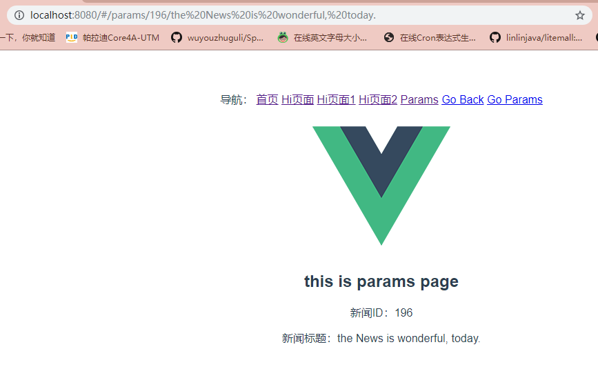

开发中有时候我们虽然设置的路径不一致，但是我们希望跳转到同一个页面，或者说是打开同一个组件。 这时候我们就用到了路由的重新定向redirect参数。
我们只要在路由配置文件中（/src/router/index.js）把原来的component换成redirect参数就可以了。我们来看一个简单的配置。
然后在app.vue中加一个导航菜单
点击Go Back 我们就可以实现重定向了。这里我们设置了goback路由，但是它并没有配置任何component（组件）， 而是直接redirect到path:’/’下了，这就是一个简单的重新定向。
我们已经学习过了通过url来传递参数，那我们重定向时如果也需要传递参数怎么办？其实vue也已经为我们设置好了， 我们只需要在ridirect后边的参数里复制重定向路径的path参数就可以了。可能你看的有点晕，我们来看一段代码：
已经有了一个params路由配置，我们再设置一个goParams的路由重定向，并传递了参数。 这时候我们的路由参数就可以传递给params.vue组件了。 参数接收方法和正常的路由接收方法一样。接下来我们在app.vue 中添加一个导航菜单来测试一下
实现效果如图：
